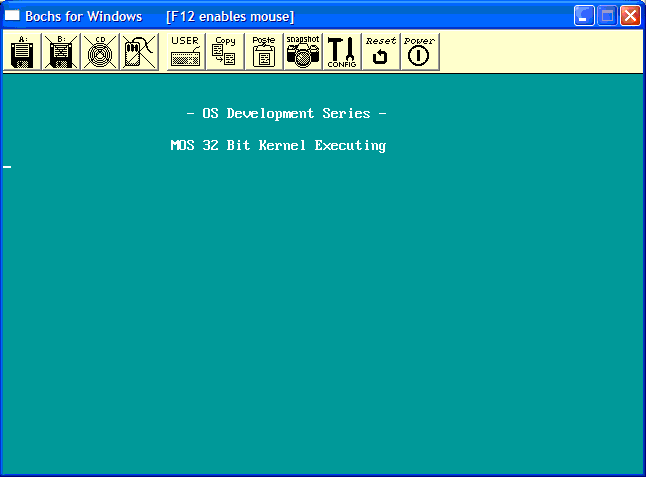

Prepare for the Kernel part 2
This is the tutorial you have been waiting for. It builds directly on the all of the previous code, and loads our Kernel at the 1 MB mark, and executes our Kernel.
The Kernel is the most important part of our OS. The Kernel...We have talked a little about this mysterious foe before, haven't we? We will talk about the Kernel a lot more in the next few tutorials, including design, structure, and development.
Right now, we already have everything set up... It's time to load the Kernel and say good bye to Stage 2!
Note: This tutorial requires a basic understanding of the Bootloaders 3 and 4 tutorials. We cover everything in detail here, but all of the concepts are explained in depth in the Bootloaders 3 and 4 Tutorials. If you have not read those tutorials, Please look at those tutorials first.
[OS Development Series Tutorial 5: Bootloaders 3] (fix link)
[OS Development Series Tutorial 6: Bootloaders 4] (fix link)
If you have read them, this tutorial should not be that hard.
Ready?
A Basic Kernel Stub
This is the Kernel we will load:
; We are still pure binary. We will fix this in the next few tutorials 😀
org 0x10000 ; Kernel starts at 1 MB
bits 32 ; 32 bit code
jmp Stage3 ; jump to stage 3
%include "stdio.inc" ; Our stdio.inc file we developed from the previous tutorial
msg db 0x0A, 0x0A, "Welcome to Kernel Land!!", 0x0A, 0
Stage3:
;-------------------------------;
; Set registers ;
;-------------------------------;
mov ax, 0x10 ; set data segments to data selector (0x10)
mov ds, ax
mov ss, ax
mov es, ax
mov esp, 90000h ; stack begins from 90000h
;---------------------------------------;
; Clear screen and print success ;
;---------------------------------------;
call ClrScr32
mov ebx, msg
call Puts32
;---------------------------------------;
; Stop execution ;
;---------------------------------------;
cli
hlt
Okay, there is nothing much here. We will build on this program heavily in the next section.
Notice that it is all 32 bit. Sweet, huh? We are going to be out of the 16 bit world completely here.
For now, we just halt the system when we get to the Kernel.
Please note that we will not be using this file probably at all in the rest of the series. Rather, we will be using a 32 bit C++ compiler. After we load the kernel image in memory, we can parse the file in memory for the kernel entry routine and call the C main() routine directly from our 2nd stage boot loader. Cool, huh? In other words, we will go from our 2nd stage boot loader directly into the C++ world without any stub file or program. However, we need a starting point. Because of this, we will use a basic stub file in this tutorial to help test and demonstrate it working.
In the next few tutorials we will be getting our compilers up and working and use that instead. But now we are getting ahead of ourselves here 😉
The floppy interface
Yay! Its time to finish off stage 2! In order to load the Kernel we need to traverse FAT12 again. But before that, we have to get sectors off disk.
This code is EXACTALLY the same from our bootloader, and uses the BIOS INT 0x13 to load sectors off disk.
Because this tutorial is also a complete review, lets break each routine into sections and describe exactly what is going on.
Reading a sector - BIOS INT 0x13
We talked about everything regarding loading sectors in our Bootloaders 3. Looking back at the tutorial, remember that we can use the BIOS Interrupt 0x13 function 2 to read a sector. Okay, then. The problem here is that We have to load sectors before going into protected mode. If we attempt to call a BIOS interrupt from protected mode, the processor will triple fault, remember?
Anyways, what was the interrupt? Right....
INT 0x13/AH=0x02 - DISK : READ SECTOR(S) INTO MEMORY
AH = 0x02
AL = Number of sectors to read
CH = Low eight bits of cylinder number
CL = Sector Number (Bits 0-5). Bits 6-7 are for hard disks only
DH = Head Number
DL = Drive Number (Bit 7 set for hard disks)
ES:BX = Buffer to read sectors to
Returns:
AH = Status Code
AL = Number of sectors read
CF = set if failure, cleared is successful
This is not THAT hard. Remember from the Bootloaders tutorial though. That is, we need to keep track of the sector, track, and head number, and insure we don't load attempt to load a sector beyond the track. That is, Remember that there are 18 sectors per track? Setting the sector number greater then 18 will cause the controller to fail, and processor to triple fault.
Okay...18 sectors per track. Remember that each sector if 512 bytes. Also, remember that there are 80 tracks per side.
Okay then! All of this information... Sectors per track, the number of tracks, number of heads, the size of a sector, completely depend on the disk itself. Remember that a sector does not NEED to be 512 bytes?
We describe everything in the OEM Parameter Block:
bpbOEM db "My OS "
bpbBytesPerSector: DW 512
bpbSectorsPerCluster: DB 1
bpbReservedSectors: DW 1
bpbNumberOfFATs: DB 2
bpbRootEntries: DW 224
bpbTotalSectors: DW 2880
bpbMedia: DB 0xf0 ;; 0xF1
bpbSectorsPerFAT: DW 9
bpbSectorsPerTrack: DW 18
bpbHeadsPerCylinder: DW 2
bpbHiddenSectors: DD 0
bpbTotalSectorsBig: DD 0
bsDriveNumber: DB 0
bsUnused: DB 0
bsExtBootSignature: DB 0x29
bsSerialNumber: DD 0xa0a1a2a3
bsVolumeLabel: DB "MOS FLOPPY "
bsFileSystem: DB "FAT12 "
This should look familiar! Each member has been described in Tutorial 5--Please see that tutorial for a full detailed explanation of everything here.
Now, all we need to have is a method so that we can load any number of sectors from disk to some location in memory. We immediately run into a problem though. Okay--We know what sector we want to load. However, BIOS INT 0x13 does not work with sectors. Okay, it does--but it also works with cylinders (Remember that a cylinder is just a head?) and tracks.
So what does this have to do with anything? Imagine if we want to load sector 20. We cannot directly use this number, because there are only 18 sectors per track. Attempting to read from the 20th sector on the current track will cause the floppy controller to fail, and processor to triple fault, as that sector does not exist. In order to read the 20'th sector, we have to read Track 2 Sector 2, Head 0 We will verify this later.
What this means as that, if we want to specify a sector to load, we need to convert our linear sector number into the exact cylinder, track, and sector location on disk.
Wait for it...Aha! Remember our CHS to LBA conversion routines?
Converting LBA to CHS
This should sound familiar, doesn't it? Linear Block Addressing (LBA) simply represents an indexed location on disk. The first block being 0, the second block being 1. In other words, LBA simply represents the sector number, beginning with 0, where each "block" is a single "sector".
Anyhow...We have to find a way to convert this sector number (LBA) to the exact cylinder/head/sector location on disk. Remember this from Bootloaders 4 tutorial?
Some of our readers exclaimed this code was fairly tricky--and I am to admit it is. So, I am going to explain it in detail here.
First, lets look at the forumlae again:
absolute sector = (logical sector / sectors per track) + 1
absolute head = (logical sector / sectors per track) MOD number of heads
absolute track = logical sector / (sectors per track * number of heads)
Okay! This is pretty easy, huh? The "logical sector" is the actual sector number we want. Note that the logical sector / sectors per track is inside of all of the above equations.
Because this division is inside of all of these equations, we can store it's result and use it for the other two expressions.
Lets put this into an example. We already said the 20th sector should be Track 2, Sector 2, remember? Lets try to put this formula to the test then:
absolute sector = (logical sector / sectors per track) + 1
2.111111111111111111111111111111 = 20 / 18 (sectors per track) + 1
We only keep the absolute number (2)--Aha! Sector 2! Note that we need to add 1 here because LBA addressing begins from 0. Remember that the basic formula "logical sector / sectors per track" is in ALL of these formulas. It is simply 1.1111111111111111111111111111111 in this example (Note in the above formula, we added 1 more). Because we are working with whole numbers, this is simply 1.
absolute head = (logical sector / sectors per track) MOD number of heads
(1) MOD Number of heads (2)
= Head 1
Remember from the OEM Block that we specified 2 heads per cylinder. So far, this indicates sector 2 on Head 1. Great--but what track are we on?
absolute track = logical sector / (sectors per track * number of heads)
(1) * Number of heads (2)
= Track 2
Notice that this is the exact same formula as above. The ONLY difference is that simple operation.
Anyhow... following the formula we have: Logical Sector 20 is on Sector 2 Track 2 Head 0. Compare this with what we originally said in the previous section, and notice how this formula works 😉
Okay, so now lets try to apply these formulas in the code:
LBACHS Explanation: Detail
Okay, this routine takes one parameter: AX, which contains the logical sector to convert into CHS. Note the formula (logical sector / sectors per track) is part of all three formulas. Rather then recalculating this over and over, it is more efficient to just calculate it once, and use that result in all of the other calculations... This is how this routine works.
LBACHS:
xor dx, dx ; prepare dx:ax for operation
div WORD [bpbSectorsPerTrack] ; calculate
Now AX contains the logical sector / sectors per track operation.
Begin with sector 1 (Remember the + 1 in logical sector / sectors per track ?)
inc dl ; adjust for sector 0
mov BYTE [absoluteSector], dl
Clear DX. AX still contains the result of logical sector / sectors per track
xor dx, dx ; prepare dx:ax for operation
Now for the formulas...
absolute head = (logical sector / sectors per track) MOD number of heads
absolute track = logical sector / (sectors per track * number of heads)
The multiplication results into a division by the number of heads. So the only difference between these two is the operation--one is division, and one is the remainder of that division (The Modulus).
Okay, lessee...What instruction can we use that could return both the remainder (MOD) and division result? DIV!
Remember that (logical sector / sectors per track) is still in AX, so all we need to do is divide by number of heads per cylinder...
div WORD [bpbHeadsPerCylinder] ; calculate
The equations for absolute head and absolute track are very similar. The only actual difference is the operation. This simple DIV instruction sets both DX and AX. AX Now stores the DIVISION of HeadsPerCylinder; DX now contains the REMAINDER (Modulus) of the same operation
mov BYTE [absoluteHead], dl
mov BYTE [absoluteTrack], al
ret
I hope this clears things up a bit. If not, please let me know 😉
Converting CHS to LBA
This is a lot more simpler:
ClusterLBA:
; LBA = (cluster - 2 ) * sectors per cluster
sub ax, 0x0002 ; subtract 2 from cluster number
xor cx, cx
mov cl, BYTE [bpbSectorsPerCluster] ; get sectors per cluster
mul cx ; multiply
Reading in sectors
Okay, so now we have everything to read in sectors. This code is also exactly the same from the bootloader.
;************************************************;
; Reads a series of sectors
; CX=>Number of sectors to read
; AX=>Starting sector
; ES:BX=>Buffer to read to
;************************************************;
ReadSectors:
.MAIN
mov di, 0x0005 ; five retries for error
Okay, here we attempt to read the sectors 5 times.
.SECTORLOOP
push ax
push bx
push cx
call LBACHS ; convert starting sector to CHS
We store the registers on the stack. The starting sector is a linear sector number (Stored in AX). Because we are using BIOS INT 0x13, We need to convert this to CHS before reading from the disk. So, we use our LBA to CHS coversition routine. Now, absoluteTrack contains the track number, absoluteSector contains the sector within the track, and absoluteHead contains the head number. All of this was set by our LBA to CHA conversion routine, remember?
mov ah, 0x02 ; BIOS read sector
mov al, 0x01 ; read one sector
mov ch, BYTE [absoluteTrack] ; track
mov cl, BYTE [absoluteSector] ; sector
mov dh, BYTE [absoluteHead] ; head
mov dl, BYTE [bsDriveNumber] ; drive
int 0x13 ; invoke BIOS
Now we set up to read a sector, and invoke the BIOS to read it. For simplicity, lets take another look at the BIOS INT 0x13 routine that we are executing:
INT 0x13/AH=0x02 - DISK : READ SECTOR(S) INTO MEMORY
AH = 0x02
AL = Number of sectors to read
CH = Low eight bits of cylinder number
CL = Sector Number (Bits 0-5). Bits 6-7 are for hard disks only
DH = Head Number
DL = Drive Number (Bit 7 set for hard disks)
ES:BX = Buffer to read sectors to
Compare this with how we execute the code above--fairly simple, huh?
Remember that the buffer to write to is in ES:BX, which INT 0x13 references as the buffer. We passed ES:BX into this routine, so that is the location to load the sectors to.
jnc .SUCCESS ; test for read error
xor ax, ax ; BIOS reset disk
int 0x13 ; invoke BIOS
dec di ; decrement error counter
pop cx
pop bx
pop ax
jnz .SECTORLOOP ; attempt to read again
The BIOS INT 0x13 function 2 sets the Carry Flag (CF) is there is an error. If there is an error, decrement the counter (Remember we set up the loop to try 5 times?), and then try again!
If all 5 attempts failed (CX=0, Zero flag set), then we fall down to the INT 0x18 instruction:
int 0x18
...Which reboots the computer.
If the Carry Flag was NOT set (CF=0), then the jnz instruction jumps here, as it indicates that there was no error. The sector was read successfully.
.SUCCESS
pop cx
pop bx
pop ax
add bx, WORD [bpbBytesPerSector] ; queue next buffer
inc ax ; queue next sector
loop .MAIN ; read next sector
ret
Now, just restore the registers, and go to the next sector. Not to hard 😀 Note that, because ES:BX contains the address to load the sectors to, we need to increment BX by the bytes per sector to go to the next sector.
AX contained the starting sector to read from, so we need to increment that too.
I guess that's all for now. Please reference Bootloaders 4 for a full explanation of this routine.
Floppy16.inc
In the example demo, all of the floppy access routines are inside of Floppy16.inc.
FAT12 Interface
Yay--We can load sectors. Woohoo... :( As you know, we cannot really do much with that. What we need to do next is create a basic definition of a "file" and what a "file" is. We do this by means of a Filesystem.
Filesystems can get quite complex. Please reference Bootloaders 4 while I explain this code to fully understand how this code works.
Constants
During parsing Fat12, we will be needing a location to load the root directory table and the FAT table. To make things somewhat easier, lets hide these locations behind constants:
%define ROOT_OFFSET 0x2e00
%define FAT_SEG 0x2c0
%define ROOT_SEG 0x2e0
We will be loading our root directory table to 0x2e00 and our FAT to 0x2c00. FAT_SEG and ROOT_SEG are used for loading into segment registers.
Traversing FAT12
As you know, some OS code can simply get ugly. Filesystem code, in my opinion, is one of them. This is one of the reasons why I decided to go over this code in this review-like tutorial. The FAT12 code is basically the same as the bootloaders, but I decided to modify it to decrease dependencies with the main program. Because of this, I decided to describe it in detail here.
Please note, I will not be going over FAT12 in detail here. Please see the Bootloaders 4 tutorial for complete details.
Anyhow, as you know, in order to traverse FAT12 the first thing we need to load is the Root Directory Table, so lets look at that first.
Loading the Root Directory Table
Disk structure
| FAT12 FS Sectors |
|---|
| Boot Sector |
| Extra Reserved Sectors |
| File Allocation Table 1 |
| File Allocation Table 2 |
| Root Directory (FAT12/FAT16 Only) |
| Data Region containing files and directories |
Remember that the Root Directory Table is located right after the FAT's and Reserved sectors?
In loading the root directory table, we need to find a location in memory that we do not currently need and copy it there. For now, I chose 0x7E00 (Real mode: 0x7E0:0). This is right above our bootloader, which is still in memory because we have never overwritten it.
There is an important concept here. Notice that we have to load everything at absolute memory locations. This is very bad, as we have to physically keep track of where things are located. This is where a Low level memory manager comes into play. More later...
;*******************************************
; LoadRoot ()
; - Load Root Directory Table
;*******************************************
LoadRoot:
pusha ; store registers
push es
We first store the current state of the registers. Not doing so will effect the rest of the program that uses it, which is very bad.
Now we get the size of the root directory table, so that we know the number of sectors to load.
Remember from Bootloaders 4: Each entry is 32 bytes in size. When we add a new file in a FAT12 formatted disk, Windows automatically appends to the root directory for us, and adds to the bpbRootEntries byte offset variable of the OEM Parameter Block
See...Windows is nice 😀
So...lessee, knowing each entry is 32 bytes in size, multiplying 32 bytes by the number of root directories will tell us how many bytes there are in the Root Directory Table. Simple enough, but we need the number of sectors--so we need to divide this result by the number of sectors:
; compute size of root directory and store in "cx"
xor cx, cx ; clear registers
xor dx, dx
mov ax, 32 ; 32 byte directory entry
mul WORD [bpbRootEntries] ; total size of directory
div WORD [bpbBytesPerSector] ; sectors used by directory
xchg ax, cx ; move into AX
OKAY, so now AX=number of sectors the root directory takes. Now, we have to find the starting location.
Remember from Bootloaders 4: The Root Directory table is Right after both FAT's and reserved sectors on the disk. Please look at the above disk structure table to see where the root directory table is located.
So...All we need to do is get the amount of sectors for the FAT's, and add that to the reserved sectors to get the exact location on disk:
; compute location of root directory and store in "ax"
mov al, byte [bpbNumberOfFATs] ; number of FATs
mul word [bpbSectorsPerFAT] ; sectors used by FATs
add ax, word [bpbReservedSectors] ; adjust for bootsector
mov word [datasector], ax ; base of root directory
add word [datasector], cx
Now that we have the number of sectors to read in, and the exact starting sector, lets read it in!
; read root directory
push word ROOT_SEG
pop es
mov bx, 0x0 ; copy root dir
call ReadSectors ; read in directory table
pop es
popa ; restore registers and return
ret
Notice that we set the seg:offset location to read into ROOT_SEG:0.
Next up, loading the FAT!
Loading the FAT
Okay...Remember from Bootloaders 4, we talked about the disk structure of a FAT12 formatted disk. Going Back in Time(tm), lets take another look:
Disk structure (take another look)
| FAT12 FS Sectors |
|---|
| Boot Sector |
| Extra Reserved Sectors |
| File Allocation Table 1 |
| File Allocation Table 2 |
| Root Directory (FAT12/FAT16 Only) |
| Data Region containing files and directories |
Remember that there are either one or two FATs? Also notice that they are right after the reserved sectors on disk. This should look familiar!
;*******************************************
; LoadFAT ()
; - Loads FAT table
;
; Parm/ ES:DI =Root Directory Table
;*******************************************
LoadFAT:
pusha ; store registers
push es
First we need to know how many sectors to load. Look back at the disk structure again. We store the number of FATs (and the sectors per FAT) in the OEM Parameter Block. So to get the total sectors, just multiply them:
; compute size of FAT and store in "cx"
xor ax, ax
mov al, BYTE [bpbNumberOfFATs] ; number of FATs
mul word [bpbSectorsPerFAT] ; sectors used by FATs
mov cx, ax
Now, we need to take the reserved sectors into consideration, as they are before the FAT...
; compute location of FAT and store in "ax"
mov ax, word [bpbReservedSectors]
Yippee! Now, CX contains the number of sectors to load, so call our routine to load the sectors!
; read FAT into memory (Overwrite our bootloader at 0x7c00)
push word FAT_SEG
pop es
xor bx, bx
call ReadSectors
pop es
popa ; restore registers and return
ret
That's all there is to it 😉
Searching for a file
In searching for a file, we need the filename to search with. Remember that DOS uses 11 byte file names following the common 8.3 naming convention (8 byte file name, 3 character extension.) Because of the way the entries in the Root directory is structured, This MUST be 11 bytes--no exceptions.
Remember the format of the Root Directory Table: The filename is stored within the first 11 bytes of an entry. Lets take another look at the format of each directory entry:
- Bytes 0-7 : DOS File name (Padded with spaces)
- Bytes 8-10 : DOS File extension (Padded with spaces)
- Bytes 11 : File attributes. This is a bit pattern:
- Bit 0 : Read Only
- Bit 1 : Hidden
- Bit 2 : System
- Bit 3 : Volume Label
- Bit 4 : This is a subdirectory
- Bit 5 : Archive
- Bit 6 : Device (Internal use)
- Bit 6 : Unused
- Bytes 12 : Unused
- Bytes 13 : Create time in ms
- Bytes 14-15 : Created time, using the following format:
- Bit 0-4 : Seconds (0-29)
- Bit 5-10 : Minutes (0-59)
- Bit 11-15 : Hours (0-23)
- Bytes 16-17 : Created year in the following format:
- Bit 0-4 : Year (0=1980; 127=2107
- Bit 5-8 : Month (1=January; 12=December)
- Bit 9-15 : Hours (0-23)
- Bytes 18-19 : Last access date (Uses same format as above)
- Bytes 20-21 : EA Index (Used in OS/2 and NT, don't worry about it)
- Bytes 22-23 : Last Modified time (See byte 14-15 for format)
- Bytes 24-25 : Last modified date (See bytes 16-17 for format)
- Bytes 26-27 : First Cluster
- Bytes 28-32 : File Size
All Bolded entries are the important ones. We must compare the first 11 bytes of each entry, as they contain the filename.
Once we find a match, We need to reference byte 26 of the entry to get it's current cluster. All of this should sound familiar.
Now...On to the code!
;*******************************************
; FindFile ()
; - Search for filename in root table
;
; parm/ DS:SI =File name
; ret/ AX =File index number in directory table. -1 if error
;*******************************************
FindFile:
push cx ; store registers
push dx
push bx
mov bx, si ; copy filename for later
We first store the current register states. We need to use SI, so we need to save the current filename somewhere...BX, perhaps?
Remember that we need to parse the Root Directory table to find the image name. To do this, we need to check the first 11 bytes of each entry in the directory table to see if we found a match. Sounds simple, huh?
To do this, we need to know how many entries there are...
; browse root directory for binary image
mov cx, word [bpbRootEntries] ; load loop counter
mov di, ROOT_OFFSET ; locate first root entry
cld ; clear direction flag
Okay, so CX now contains the number of entries to look in. All we need to do now is loop and compare the 11 byte character filename. Because we are using string instructions, we want to first insure the direction flag is cleared, which is what cld does.
DI is set to the current offset into the directory table. This is the location of the table. i.e., ES:DI points to the starting location of the table, so lets parse it!
.LOOP:
push cx
mov cx, 11 ; eleven character name. Image name is in SI
mov si, bx ; image name is in BX
push di
rep cmpsb ; test for entry match
If the 11 bytes match, the file was found. Because DI contains the location of the entry within the table, we immediately jump to .Found.
If it does not match, we need to try the next entry in the table. We add 32 bytes onto DI. (Remember that each entry is 32 bytes?)
pop di
je .Found
pop cx
add di, 32 ; queue next directory entry
loop .LOOP
If the file was not found, restore only the registers that are still on the stack, and return -1 (error)
.NotFound:
pop bx ; restore registers and return
pop dx
pop cx
mov ax, -1 ; set error code
ret
If the file was found, restore all of the registers. AX contains the entry location within the Root Directory Table so that it can be loaded.
.Found:
pop ax ; return value into AX contains entry of file
pop bx ; restore registers and return
pop dx
pop cx
ret
Yay! Now that we can find the file (and get it's location within the Root Directory Table), lets load it!
Loading a file
Now that everything is finally set up, it is finally time to load the file!
Most of this is pretty easy, as it calls our other routines. It is here that we loop, and insure that all of the file's clusters are loaded into memory.
;*******************************************
; LoadFile ()
; - Load file
; parm/ ES:SI => File to load
; parm/ BX:BP => Buffer to load file to
; ret/ AX => -1 on error, 0 on success
; ret/ CX => Number of sectors loaded
;*******************************************
LoadFile:
xor ecx, ecx
push ecx
Here we just save the registers. We need to keep a copy of the buffer to write to somewhere, so we keep that on the stack as well. CX is used to keep track of how many sectors we have loaded. We store this on the stack for later.
In loading the file, we will need to first find it (Kind of obvious, don't you think? ^^) We can easily use our FindFile routine here. FindFile sets AX to -1 on error, or the starting entry location within the Root Directory Table upon success. We can use this index to get anything we ever wanted to know about the file.
.FIND_FILE:
push bx ; BX=>BP points to buffer to write to; store it for later
push bp
call FindFile ; find our file. ES:SI contains our filename
cmp ax, -1 ; check for error
jne .LOAD_IMAGE_PRE ; No error 😀 Load the FAT
pop bp ; Nope :( Restore registers, set error code and return
pop bx
pop ecx
mov ax, -1
ret
Okay, so if we get here, the file was found. ES:DI contains the location of the first root entry, which was set by FindFile(), so by referencing ES:DI we effectively get the file's entry.
Look back at the entry description table above in the previous section. Notice that we can offset 0x1A bytes to get to byte 26 (The starting cluster number), so store it...
.LOAD_IMAGE_PRE:
sub edi, ROOT_OFFSET
sub eax, ROOT_OFFSET
; get starting cluster
push word ROOT_SEG
pop es
mov dx, word [es:di + 0x001A] ; ES:DI points to file entry in root directory table.
mov word [cluster], dx ; Reference the table for file's first cluster
pop bx ; get location to write to so we don't screw up the stack
pop es
push bx ; store location for later again
push es
The above is messy, I know. Remember that AX was set to the entry number by the call to FindFile? We need to store that here, but need to keep the buffer to write to on the top of the stack still. This is why I played with the stack a little here 😀
Anyways, next we load the FAT. This is incredibly easy...
call LoadFAT ; Load the FAT to 0x7c00
OKAY then! Now that the FAT is loaded, and that we have the starting file cluster, it is time to actually read in the file's sectors.
.LOAD_IMAGE:
mov ax, WORD [cluster] ; cluster to read
pop es
pop bx
call ClusterLBA ; convert cluster to LBA
xor cx, cx
mov cl, BYTE [bpbSectorsPerCluster] ; sectors to read
call ReadSectors ; Read in cluster
pop ecx ; increment sector count
inc ecx
push ecx
push bx ; save registers for next iteration
push es
mov ax, FAT_SEG
mov es, ax
xor bx, bx
This code is not that bad. Remember that, for FAT12, each cluster is just 512 bytes? i.e., each cluster simply represents a "sector". We first get the starting cluster/sector number. We cannot do much with just a cluster number though, as it is a linear number. That is, it is the sector number in CHS Not LBA format--It assumes we have the track and head information. Because our ReadSectors() requires an LBA linear sector number, We convert this CHS to an LBA address. Then, get the sectors per cluster, and read it in!
Note that we pop ES and BX--They were pushed on the stack from the beginning. ES:BX points to the ES:BP buffer that was passed to this routine--It contains the buffer to load the sectors into.
OKAY, so now that a cluster was loaded, we have to check with the FAT to determine if the end of file is reached. However, Remember that each FAT entry is 12 bytes? We found out from Bootloaders 4 that there is a pattern when reading the FAT: For every even cluster, take the low twelve bits; for every high cluster take the high twelve bits
Please see Bootloaders 4 to see this in detail.
To determine if it is even or odd, just divide by 2:
; compute next cluster
mov ax, WORD [cluster] ; identify current cluster
mov cx, ax ; copy current cluster
mov dx, ax ; copy current cluster
shr dx, 0x0001 ; divide by two
add cx, dx ; sum for (3/2)
mov bx, 0 ; location of FAT in memory
add bx, cx ; index into FAT
mov dx, WORD [es:bx] ; read two bytes from FAT
test ax, 0x0001
jnz .ODD_CLUSTER
.EVEN_CLUSTER:
and dx, 0000111111111111b ; take low twelve bits
jmp .DONE
.ODD_CLUSTER:
shr dx, 0x0004 ; take high twelve bits
.DONE:
mov WORD [cluster], dx ; store new cluster
cmp dx, 0x0FF0 ; test for end of file marker (0xFF)
jb LOAD_IMAGE ; No? Go on to next cluster then
DONE:
pop es ; restore all registers
pop bx
pop ecx
xor ax, ax ; return success code
ret
That's all there is too it! Granted a little complex, but not to hard, I hope 😉
Fat12.inc
Great! All of the FAT12 code is in Fat12.inc.
Finishing Stage 2
Back to Stage 2 - Loading and Executing the Kernel
Now that the messy code is over, all we need to do is load our Kernel image into memory from Stage 2, and execute our kernel. The problem is: Where?
While we do want to load it to 1MB, we cannot do this directly yet. The reason is that we are still in real mode. Because of this, we will first need to load the image to a lower address first. After we switch into protected mode, we can copy our kernel to a new location. This can be 1MB, or even 3GB if paging is enabled.
call LoadRoot ; Load root directory table
mov ebx, 0 ; BX:BP points to buffer to load to
mov ebp, IMAGE_RMODE_BASE
mov Esi, ImageName ; our file to load
call LoadFile ; load our file
MOV dword [ImageSize], ecx ; size of kernel
cmp ax, 0 ; Test for success
je EnterStage3 ; yep--onto Stage 3!
mov si, msgFailure ; Nope--print error
call Puts16
mov ah, 0
int 0x16 ; await keypress
int 0x19 ; warm boot computer
cli ; If we get here, something really went wong
hlt
Now our kernel is loaded to IMAGE_RMODE_BASE:0. ImageSize contains the number of sectors loaded (The size of the kernel).
To execute inside of protected mode, all we need to do is jump or call it. Because we want our kernel at 1MB, we first need to copy it before we execute it:
bits 32
Stage3:
mov ax, DATA_DESC ; set data segments to data selector (0x10)
mov ds, ax
mov ss, ax
mov es, ax
mov esp, 90000h ; stack begins from 90000h
; Copy kernel to 1MB (0x10000)
CopyImage:
mov eax, dword [ImageSize]
movzx ebx, word [bpbBytesPerSector]
mul ebx
mov ebx, 4
div ebx
cld
mov esi, IMAGE_RMODE_BASE
mov edi, IMAGE_PMODE_BASE
mov ecx, eax
rep movsd ; copy image to its protected mode address
call CODE_DESC:IMAGE_PMODE_BASE; execute our kernel!
There is a little problem here, though. This assumes the Kernel is a pure binary file. We cannot have this, because C does not support this. We need the Kernel to be a binary format that C supports, and we will need to parse it in order to load the Kernel using C. For now, we will keep this pure binary, but will fix this within the next few tutorials. Sound cool?
Demo

Our pure uber-1337 32 bit Kernel executing.
Conclusion
In this tutorial, we covered these concepts in a new perspective, however. This may help understanding these topics a little bit more, and to see them being implemented into separate routines.
We have developed code to load sectors off disk, and parse FAT12 to load our Kernel at whatever location we want. Cool, huh? In this Series, we are loading the Kernel at 1 MB.
With a basic full 32 bit Kernel finally loaded and executing, we can finally start focusing our attention to the most important part of any operating system -- The Kernel.
In the next few tutorials, we will cover Kernel Theory, Revolutions, and Designs. We will then start covering Low Level C Programming, and Low level programming with high level language concepts and theory.
There are a lot of freedom when programming C at Kernel Level, that most other programming fields do not allow. For example, There still is no such thing as an "Access Violation", so you still have direct control over every byte in memory. The bad news: There is also no such thing as a "standard library" either. To add more bad news, you still have to remember that you are programming a low level environment, just with another abstraction layer that is C.